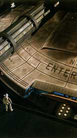
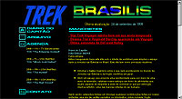
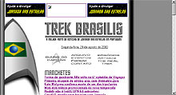
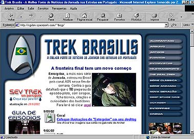

|
 |
"Não tente ser um grande homem. Seja
apenas um homem e deixe a história fazer seu julgamento."
|
|

| O
Trek Brasilis nasceu no dia 24 de setembro de 1999. Talvez
a expressão "nasceu" seja mesmo mais adequada do que
"foi criado". O site surgiu quase que como por impulso.
Sem esforço, sem planejamento, sem preparação. Um belo dia, ele
simplesmente "nasceu", como se o potencial para sua
existência tivesse atingido massa crítica.
 Essa função havia sido brevemente ocupada pelo grande site Organia, de Minas Gerais, uma das muitas inspirações do TB na web. Mas no segundo semestre de 1999, o Organia já dava sinais de que não ia concentrar sua ação no plano das notícias diárias. Se o tivesse feito, é provável que o TB nunca tivesse se formado, ou pelo menos, não naquele momento. A comunidade trekker na época estava dividida. A Frota Estelar Brasil tentava se firmar como uma entidade "nacional", embora a meta nunca tenha sido realmente atingida. Os fãs do Rio de Janeiro ainda estavam órfãos do Jetcom, um grande grupo de divulgação de Jornada nas Estrelas coordenado por Cristina Nastasi que teve uma morte extremamente prematura. O Organia era um foco em Minas Gerais, mas passava por uma série crise interna. E era raro vermos cooperação entre os diferentes grupos, o que tornava a divulgação de Jornada extremamente fragmentária em terras brasileiras.  O TB viveu por um ano (contando três meses sem atualizações em novembro e dezembro de 1999 e janeiro de 2000) com uma proposta bastante modesta, concentrando-se basicamente na divulgação de notícias, sem se preocupar muito com o conteúdo mais tradicional dos sites de Jornada nas Estrelas -- guias de episódios, fotos, vídeos etc. Com isso, construiu uma pequena base de visitantes diários, cerca de 40. A grande virada para o site aconteceu mesmo no primeiro aniversário, em setembro de 2000. O TB ganhou uma nova face. O visual cinza foi trocado por um design mais arrojado e elegante, com predominância em azul. O site começou a apostar no seu conteúdo fixo, com o estabelecimento de guias de episódios para todas as séries de Jornada, seções para cada série e uma iniciativa inédita no Brasil e no exterior: a criação de colunistas fixos e regulares para escrever sobre vários aspectos da franquia. Foi praticamente um renascimento para o site. Além de Salvador Nogueira, outros se associaram ao empreendimento. Fernando Penteriche, ex-editor do antigo site brasileiro Base Nexus, se juntou à equipe, seguido de perto por Luiz Castanheira e Daniel Sasaki. Refletindo a filosofia inicial do TB, é interessante notar que nenhum deles morava na mesma cidade! Outros também se juntaram para compor a equipe, como colunistas ou colaboradores eventuais, trazendo ainda mais brilho e destaque ao site. Entre eles estão Gustavo Leão, Lia Matos Viegas, Adriana Portes, Susana Lopes de Alexandria, Claudio Silveira, Luiz Felipe do Vale Tavares, Jorge Saldanha, Paulo Maffia, Mariana Pedroso e Fernando Rodrigues.  Logo ficou claro que o TB não teria uma existência passageira. Além de sua impressionante massa de colaboradores (foi rara a semana em que não havia nenhum novo texto de conteúdo fixo publicado), o site ganhou destaque na mídia geral (sendo citado em jornais como a "Folha de S.Paulo") e especializada (fazendo aparições em revistas como "Sci-Fi News" e "Replicante", inclusive indicando alguns de seus colaboradores como produtores de material para essas publicações). Sua audiência cresceu por um fator de sete, em média, desde o início da nova fase do site. A imagem do TB se agigantou também por conta das entrevistas inéditas e exclusivas que produziu, contando com participações de grandes nomes de Jornada nas Estrelas no Brasil e no exterior. Entre os entrevistados estavam dois atores da Série Clássica, George Takei e Walter Koenig, o ator de Voyager e diretor Robert Duncan McNeill, os designers de produção Andrew Probert e Rick Sternbach, o escritor e produtor Michael Piller e tantos outros. Essas entrevistas não só fortaleceram a presença do TB no fandom brasileiro como levaram o nome do site ao estrelato internacional. O site chegou a conquistar o prêmio Ex-Astris-Award (distribuído pelo site Ex-Astris-Scientia), em maio de 2002 -- um feito espetacular para um site com conteúdo primariamente em português. Com três anos de existência, chegou o momento de uma nova revolução. O site foi inteiramente reformulado, mantendo algumas de suas características mais fortes dos dois anos anteriores, mas tentando reforçar ainda mais seu elo com o público. É uma volta às origens, com o objetivo de usar a poderosa máquina noticiosa que se tornou o Trek Brasilis em força motriz para a definitiva integração do público brasileiro de Jornada nas Estrelas. O objetivo agora é tornar-se simplesmente a fonte definitiva de qualquer informação acerca da franquia em língua portuguesa, seja em que nível de detalhamento, e com a maior agilidade possível. Todo o conteúdo foi restruturado para permitir esse rápido acesso ao poderoso banco de dados que se tornou o Trek Brasilis. Isso, claro, sem desvirtuar a principal característica do site -- a busca da notícia, diária, atualizada, na hora em que acontece e em português --, que continua sendo a marca registrada do TB e o motivo pelo qual foi consagrado em primeiro lugar. |